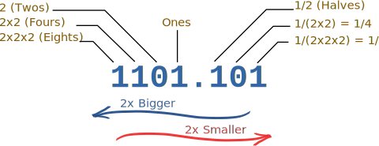

Binary Number System
A Binary Number is made up of only 0s and 1s.
|
110100 |
| Example of a Binary Number |
There is no 2, 3, 4, 5, 6, 7, 8 or 9 in Binary!
Binary numbers have many uses in mathematics and beyond.
In fact the digital world uses binary digits.
How do we Count using Binary?
It is just like counting in decimal except we reach 10 much sooner.
| Binary | ||
| 0 | We start at 0 | |
| 1 | Then 1 | |
| ??? | But then there is no symbol for 2 ... what do we do? |
| Well how do we count in Decimal? | |||
| 0 | Start at 0 | ||
| ... | Count 1,2,3,4,5,6,7,8, and then... | ||
| 9 | This is the last digit in Decimal | ||
| 10 | So we start back at 0 again, but add 1 on the left | ||
The same thing is done in binary ...
| Binary | |||
| 0 | Start at 0 | ||
| • | 1 | Then 1 | |
| •• | 10 | Now start back at 0 again, but add 1 on the left | |
| ••• | 11 | 1 more | |
| •••• | ??? | But NOW what ... ? |
| What happens in Decimal? | |||
| 99 | When we run out of digits, we ... | ||
| 100 | ... start back at 0 again, but add 1 on the left |
||
And that is what we do in binary ...
| Binary | |||
| 0 | Start at 0 | ||
| • | 1 | Then 1 | |
| •• | 10 | Start back at 0 again, but add 1 on the left | |
| ••• | 11 | ||
| •••• | 100 | start back at 0 again, and add one to the number on the left... ... but that number is already at 1 so it also goes back to 0 ... ... and 1 is added to the next position on the left |
|
| ••••• | 101 | ||
| •••••• | 110 | ||
| ••••••• | 111 | ||
| •••••••• | 1000 | Start back at 0 again (for all 3 digits), add 1 on the left |
|
| ••••••••• | 1001 | And so on! |
See how it is done in this little demonstration (press play button):
Decimal vs Binary
Here are some equivalent values:
| Decimal: | 0 | 1 | 2 | 3 | 4 | 5 | 6 | 7 | 8 | 9 | 10 | 11 | 12 | 13 | 14 | 15 |
|---|---|---|---|---|---|---|---|---|---|---|---|---|---|---|---|---|
| Binary: | 0 | 1 | 10 | 11 | 100 | 101 | 110 | 111 | 1000 | 1001 | 1010 | 1011 | 1100 | 1101 | 1110 | 1111 |
Symmetry

Binary numbers also have a beautiful and elegant pattern:

Here are some larger values:
| Decimal: | 20 | 25 | 30 | 40 | 50 | 100 | 200 | 500 |
|---|---|---|---|---|---|---|---|---|
| Binary: | 10100 | 11001 | 11110 | 101000 | 110010 | 1100100 | 11001000 | 111110100 |
"Binary is as easy as 1, 10, 11."
Now see how to use Binary to count past 1,000 on your fingers:
Position
In the Decimal System there are Ones, Tens, Hundreds, etc
In Binary there are Ones, Twos, Fours, etc, like this:

This is 1×8 + 1×4 + 0×2 + 1 + 1×(1/2) + 0×(1/4) + 1×(1/8)
= 13.625 in Decimal
Numbers can be placed to the left or right of the point, to show values greater than one and less than one.
| 10.1 | |
| The number to the left of the point is a whole number (such as 10) | |
| As we move further left, every number place gets 2 times bigger. |
|
| The first digit on the right means halves (1/2). | |
| As we move further right, every number place gets 2 times smaller (half as big). |
|
Example: 10.1
- The "10" means 2 in decimal,
- The ".1" means half,
- So "10.1" in binary is 2.5 in decimal
You can do conversions at Binary to Decimal to Hexadecimal Converter.
Words
The word binary comes from "Bi-" meaning two. We see "bi-" in words such as "bicycle" (two wheels) or "binocular" (two eyes).
| When you say a binary number, pronounce each digit (example, the binary number "101" is spoken as "one zero one", or sometimes "one-oh-one"). This way people don't get confused with the decimal number. |
A single binary digit (like "0" or "1") is called a "bit".
For example 11010 is five bits long.
The word bit is made up from the words "binary digit"
How to Show that a Number is Binary
To show that a number is a binary number, follow it with a little 2 like this: 1012
This way people won't think it is the decimal number "101" (one hundred and one).
Examples
Example: What is 11112 in Decimal?
- The "1" on the left is in the "2×2×2" position, so that means 1×2×2×2 (=8)
- The next "1" is in the "2×2" position, so that means 1×2×2 (=4)
- The next "1" is in the "2" position, so that means 1×2 (=2)
- The last "1" is in the ones position, so that means 1
- Answer: 1111 = 8+4+2+1 = 15 in Decimal
Example: What is 10012 in Decimal?
- The "1" on the left is in the "2×2×2" position, so that means 1×2×2×2 (=8)
- The "0" is in the "2×2" position, so that means 0×2×2 (=0)
- The next "0" is in the "2" position, so that means 0×2 (=0)
- The last "1" is in the ones position, so that means 1
- Answer: 1001 = 8+0+0+1 = 9 in Decimal
Example: What is 1.12 in Decimal?
- The "1" on the left side is in the ones position, so that means 1.
- The 1 on the right side is in the "halves" position, so that means 1×(1/2)
- So, 1.1 is "1 and 1 half" = 1.5 in Decimal
Example: What is 10.112 in Decimal?
- The "1" is in the "2" position, so that means 1×2 (=2)
- The "0" is in the ones position, so that means 0
- The "1" on the right of the point is in the "halves" position, so that means 1×(1/2)
- The last "1" on the right side is in the "quarters" position, so that means 1×(1/4)
- So, 10.11 is 2+0+1/2+1/4 = 2.75 in Decimal
"There are 10 kinds of people in the world,
those who understand binary numbers, and those who don't."